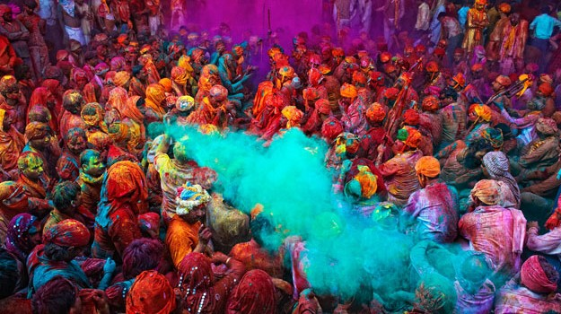

Hindistan’dan İlginç mi İlginç 12 Gelenek
Hindistan gelenekleri ve kültürü, seyahati seven hemen herkesin ilgisini çekmiştir. Dünya üzerindeki en eski ve en büyük uygarlıklarına ev sahipliği yapan, 22’den fazla dilin konuşulduğu Hindistan, muhteşem mimarilerin yanı sıra son derece ilginç geleneklere de ev sahipliği yapıyor. Hindistan’a gitmeyi düşünüyorsanız mutlaka gitmeden önce Hindistan geleneklerine göz atmalısınız.
Hindistan Gelenekleri
1) Ganj Nehri Günahlardan Arındırıyor
Hindistan geleneklerine göre Ganj Nehri’ne girmek oldukça kutsal kabul ediliyor. Hinduların inanışında Ganj Nehri, arınmayı temsil ediyor. Hindistan geleneklerinde tanrıça olarak kabul edilen ve Tanrıça Ganga adıyla bilinen Ganj Nehri’nde yıkanmak günahlardan arınmak anlamına geliyor. Hindistan kültürüne göre ölen bir kimseyi Ganj Nehri kıyısında yakıp küllerini nehre atmak da, ölülerinin ruhlarının özgürleştiğine inanılan bir ritüel.
2) İneklerin Dokunulmazlığı Var
Sanırım Hindistan kültürüne dair en çok bilinen konu, bu ülkede ineklerin dokunulmazlık haklarının olduğudur. Hindulara göre inekler kutsal hayvanlardır. Öyle ki dışarıdan ineklere taptıklarına inanırız. Fakat işin gerçeği Krişna adı verdikleri tanrılarının ineğin vücudunda beden bulduğunu düşünmeleri. Bu sebeple Hindistan kültüründe ineklere asla zarar verilmez ve inek eti yenmez. Eğer Hindistan turuna gitmiş ve Hindistan gezisi yapmışsanız sokaklarda bol bol inek görmeniz mümkündür. Ayrıca ineğin kuyruğundan tutan birilerini görürseniz, anlayın ki o kişi yemin etmektedir.
En merak edilen de biri yanlışlıkla bir ineğe zarar verdiğinde ya da öldürdüğünde ne olduğu. O kişi 6-12 ay arasında yıkanmaz, temizlenmez, sakalını ve tırnaklarını kesmez. Sosyal ve iş hayatını devam ettiremez. Bu süre sona erdiğinde Hindistan’da yine kutsal kabul edilen bir ağacın altında büyük bir ziyafet verip o ağacın yapraklarını bol miktarda tereyağında yaktıktan sonra günahından arındığına inanılır.
3) İntihar Etmek Takdir Ediliyor
Hindistan kültürü sahip olduğu farklı geleneklerle bizleri şaşırtmaya devam ediyor. O geleneklerden biri de intiharın günah kabul edilmemesi. Üstelik intihar etmek takdir edilen bir eylem olarak görülüyor. Hindistan geleneklerine göre intihar etmek alkışlanacak bir şey. Bu ilginç kültürde intihar edecek kişi önce 3 gün oruç tutuyor ve sonra nasıl intihar edeceğini seçiyor.
İntihar etmeye benzer bir başka inanış daha var Hindistan’da. O da çok yaşlı ya da ağır hasta insanları intihara bırakmaktır. Bunun için o kişiler güzel elbiseler giydirilerek Ganj Nehri’nin med-cezir yaşanan kıyısına götürüp bırakılır. Sular yükselince nehir o kişiyi içine çeker ve ölümüne sebep olur. Eğer o kişi, sular yükselmeden intihardan kaçarsa şerefini kaybeder ve bir daha itibar görmez.
4) Çok Eşli Kadınlar
Hindistan’da İngiliz işgaline kadar kadınların birden fazla eşi olabilirdi. Çoğunlukla da kardeşler aynı kadınla evlenirlerdi. Günümüzde bu gelenek çok fazla görülmese de Hindistan’ın ücra köşelerinde rastlanabiliyor.
5) Kızları Köpekle Evlendirme
Hindistan’da yedi yaşını dolduran kızlar bir köpekle evlendiriliyor. Nedeni ise kız çocuğunun evlenene dek köpek tarafından korunacağına inanılması.
6) Drahoma Geleneği
Hindistan gelenekleri arasında en yaygın olanı, başlık parası anlamındaki Drahoma geleneği. Bizdeki başlık parasının tam tersi bir gelenek Drahoma. Çünkü Hindistan’da evlenirken erkek değil kız tarafı başlık parası veriyor. Bu nedenle aileler kız çocuk sahibi olmak istemiyor.
7) Yılan Oynatma
Hindistan’ta fakir halkın para kazanmak için başlattığı yılan oynatma işi bir süre sonra Hindistan’ın sembolü ve geleneği haline gelmiş. Hindistan’ın hemen her köşesinde yılan oynatan bir Hintli görebilirsiniz. Hindistan kültürü ile özdeşleşen yılan oynatma geleneği, turistlerin de ilgisini çekiyor.
8) Sati Geleneği
Hindistan’daki tüyler ürperten, akıllara durgunluk veren bir başka gelenek ise Sati denilen gelenek. Bu geleneğe göre kocası ölüp de dul kalan kadınlar ya kendi ya da başkası tarafından benzin döküp yakılır. Bu şekilde kadının günahlarından arınıp kocasının yanına gittiği düşünülür.
9) Kurbağaların Evlendirilmesi
Duyunca inanmakta güçlük çekilen Hindistan geleneklerinden biri de kurbağaların evlendirilmesi. Neden böyle bir şey yapıyorlar derseniz cevabı, ‘Yağmur Tanrısı’ öyle istediği için.
10) Holi Festivali
Hindistan gelenekleri arasında en renkli ve en meşhur olanı şüphesiz Holi festivali. Bu festivalde herkes birbirine boyalar atıyor ve genç, yaşlı demeden doyasıya eğleniyor. Hintliler bu festivalle baharın gelişini kutlayıp, özellikle yaşlıları eğlendirip onları yalnızlıktan kurtarmak ve bahar yorgunluğunu üzerilerinden atmayı amaçlarlar.
11) Çocukları Yüksekten Atma
Böyle bir gelenek emin olun ki hiçbir yerde yok. Hindistan gelenekleri arasında yine şaşırtıcı bir uygulama olan erkek çocukları yüksekten atma geleneği, çocukların daha sağlıklı olacağı düşünüldüğü için yapılıyor.
Holi Festivali
Festivaller
Ocak Ayı Hindistan Festivalleri
Sankranti festivali, Ocak ayının ortasında, özellikle Andhra Pradesh şehrinde ve hatta tüm Hindistan’da kutlanır.
Sankranti Festivali : Hindistan Festivalleri
Bu dönem, ekinlerin biçilip, mevsimlerin değiştiği dönem olarak bilinir. Günler uzarken, geceler kısalır. Aslında bu festival hasat festivali olarak kutlanır.
Şubat-Mart Hindistan Festivalleri
“Hindistan’daki en meşhur festival nedir ?” diye soranlara : Renk festivali olarak bilinen Holi festivali, Hindistan’ın en iyi festivali olarak biliniyor ve 2 gün sürüyor. En güzeli Hindistan’ın Mathura şehrinde düzenleniyor.
İnsanlar birbirlerine boyalar fırlatıyorlar ve çılgınca kutluyorlar. Tabi yine Tanrılara adanan bir festival olduğunu unutmayın. Renklerin festivali. Rengarenk toprak boyaları önce yüzlerine sonra birbirlerine atıyorlar. Çok renkliliği ve baharın gelişini kutlamak için kutluyorlar.
Holi Festivali. En Çok Görmek İstediğim Festivallerden : Hindistan festivalleri
Mitolojiye göre ; Hint tanrısı Lord Krishna arkadaşı Radha’yı kıskanır. Çünkü kendisi karanlık bir tene sahipken Radha’nın teni rengarenktir. Küçük Krishna, doğanın bu adaletsizliği kaşısında annesi Yashoda’ya dert yanar.
Annesi oğlu Krishna’nın gönlünü almak için yüzünü Radha’nınki gibi kendi seçtiği renklerde boyamayı teklif eder. Krishna bu teklifi kabul eder. Daha sonra bu oyun popüler olur ve zamanla festival olarak kutlanmaya başlar.
Ayrıca ; Maha Shivaratri festivali de bu dönemde kutlanır. En önemli Tanrılardan birisi olan Şiva için kutlamalar yapılır. Hani dedim ya 3 tane çok önemli Tanrı var diye.
İşte onlardan birisi bu. Oruç günü olarak Şiva’ya adanır. Şiva’ya yaklaşıp, ona kavuşmak için oruçlar tutulur, ilahiler, dualar ve yazıtlar okunur. Bu dönem, inananlar için çok önemli bir dönemdir. En büyük ibadetlerini, inançları çerçevesinde bu dönemde yaparlar.
Mart-Nisan Hindistan Festivalleri
Kumbh Mela festivali. 12 yılda bir düzenleniyor. Dünyada en çok insanın katıldığı festival olarak biliniyor. En son 2013 yılında yapıldı ve 80 milyondan fazla kişi bu festivale katıldı.
Kumbh Mela Festivali : Hindistan Festivalleri
Mahavir Jayanti de bu dönemde kutlanır. Jain bayramı olarak bilinir. Jainizmin kurucusu Mahavari’nin doğumu bu festivalde kutlanır. Jain dinine inanların kutladıkları en büyük bayram olarak bilinir.
Mayıs-Haziran-Temmuz Hindistan Festivalleri
Tac Mahal-Agra-Hindistan
Bildiğiniz gibi bu dönemler, muson yağmurlarının sıkça görülmeye başladığı dönemdir. O yüzden, sıcaklık ve nem öyle artar ki, nefes almak bile güç olabilir.
Ağustos Hindistan Festivalleri
Onam hasat festivali kutlanıyor. Ülkenin en güzel şehirlerinden birisi Kerala’da 10 gün boyunca kutlanıyor.
Onam Festivali : Hint Festivalleri
Kerala mutlaka görülmesi gereken yerlerden. Özellikle üstü kapalı nehir tekneleri çok meşhur. Ben de henüz gidemedim ama mutlaka bir sonraki rotam içerisinde olacak.
Eylül Hindistan Festivalleri
Hindistan’ın en Popüler tanrısı olan fil başlı Ganeş’e adanıyor. 11 gün sürüyor. Ganeş heykelleri yapılıp, festival sonrasında okyanusa atılıyor. 2016 ‘da 5 Eylül’de, 2017’de 25 Ağustos’ta kutlanacak. Eylül ayında ayrıca ; Krishna Janmashtami/Govinda festivali kutlanır.
Ganesh Chathurthi Festivali Hindistan : Hindistan Festivalleri
Lord Krişna’nın doğum gününün kutlandığı bu festivalde, yüksek yerlerde bulunan noktalardaki çömleklere, insan piramitlerinden veya yüksek binalardan erişmeye çalışıyorlar.
Daha sonra bu çömlekleri kırıp açıyorlar. Sonrasında çömleklerin içerisinden çıkan lor peynirine benzeyen bir peynir ortalığa saçılıyor. Her yıl Eylül ayında düzenleniyor.
Ekim Hindistan Festivalleri
Navratri festivali, ibadet ve dans edilerek Ekim ayında kutlanır. Evrenin yaratıcısı, koruyucusu Tanrıça Durga’ya adanır ve 9 gece boyunca sürer.
Navratri festivali : Hint Festivalleri
Tam bir festival havasında geçen en önemli Hint festivallerinden birisidir. Özellikle en güzel aylardan birisi olan Ekim ayında yapılması da cabasıdır.
Kasım Hindistan Festivalleri
Diğer en önemli festival ise Dwali festivalidir. Dwali festivalinde Hindular, yeni yılın gelişini, evlerini, caddelerini, sokaklarını mumlarla süsleyerek, ışıl ışıl bir tablo sunan bu festivalde kutlarlar. Işıkları iyiliği aydınlatarak karanlığın kötülüğünü yokeder.
Dwali Festivali : Hindistan festivalleri
Dwali festivalinin başlangıç tarihi, Hindu takviminin 13. gününe denk gelen Kasım ayında kutlanır. Aşağıdaki videodan izleyebilirsiniz. Işıklar enfes…
Kasım ayında ayrıca “Pushkar Deve Festivali” de yapılır. 50 binden fazla deve bu festivale getirilir ve güzellik yarışmaları organize edilir.
Aralık Hindistan Festivalleri
Aralık ayının 25’inde ise Noel kutlanır. Özellikle Mumbay, Kerala ve Goa şehirlerinde yaygındır. Bildiğiniz gibi Hindistan’da bir çok Hristiyan toplum da yaşamaktadır.